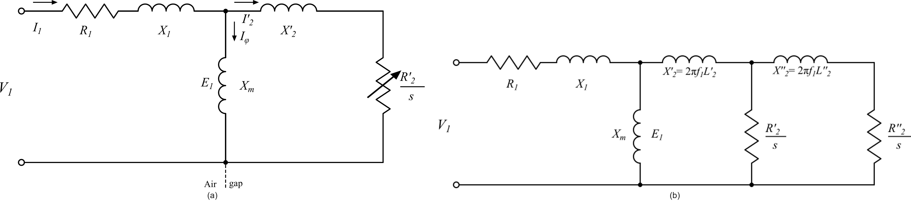
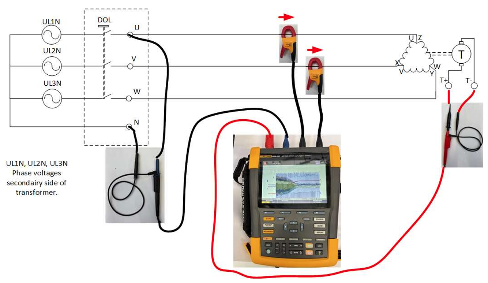
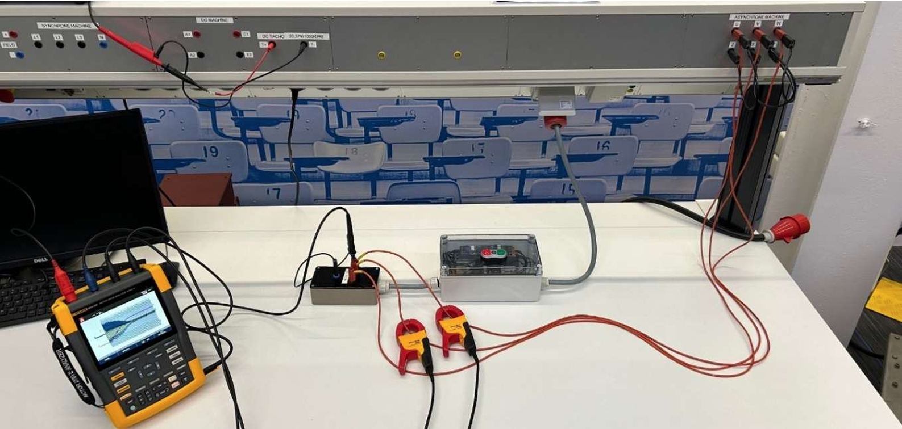
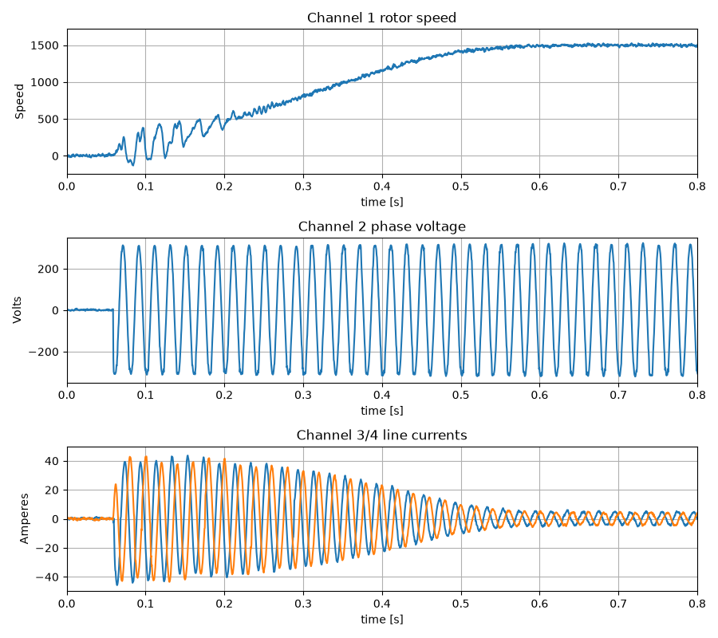

Extract motor parameters of induction machine and characterizing the startup dynamics of an induction machine
Introduction
This lab consists of two parts. Part One focuses on extracting the parameters of the induction machine, while Part Two focuses on extracting the startup procedure and comparing it with the Simulink model.
Before you are allowed to do the lab work, you have to study the experiment procedures and the theory behind the experiments. After doing the lab work, you have to analyze the measured results, calculate and plot the theoretical torque-speed characteristic of the induction machine, then compare the measured results with the theoretical results. A report has to be be written and submitted to complete the lab work.
Charachterising the induction machine.
Introduction
This section explains how to extract the start-up dynamics of an induction machine. It describes the method used to measure and process the inrush data of the Asynchronous Machine (ASM) during the practical exercise associated with course ET4121.
The measurements are used for Assignment 7, which involves creating a motor model in MATLAB/Simulink and validating it against measurements performed during the practical session. The measurements consist of one phase voltage, two phase currents, and the ASM rotor speed.

To determine the parameters, we determine the current phasor at three different values of the slip:
- s = 0 (synchronous, driven by DC machine, check speed with stroboscope)
- s = snom (rated slip, use DC machine as generator, check speed with tacho)
- s = 1 (blocked rotor, reduced voltage)
These measurements have to be done at three different voltage and current levels:
- For s = 0 and s = snom at voltage levels of 33%, 66% and 100% of the rated voltage.
- For s = 1 at current levels of 33%, 66% and 100% of the rated current.
No-load test (s = 0)
The no-load test was performed at a frequency of 50 Hz. The line-to-line voltage was varied to observe the magnetizing branch characteristics.
| % | N (rpm) | ULin (V) | ILin (A) | cos φ | P (W) |
|---|---|---|---|---|---|
| 33 | 1500 | 125.1 | 0.71 | 0.26 | 30 |
| 66 | 1500 | 250.7 | 1.32 | 0.18 | 105 |
| 100 | 1500 | 379.9 | 2.38 | 0.08 | 153 |
Nominal operation test (s = snom)
The machine was loaded until it reached the target speed. The values were recorded at steady state.
| % | N (rpm) | ULin (V) | ILin (A) | cos φ | P (W) |
|---|---|---|---|---|---|
| 33 | 1400 | 125.3 | 2.06 | 0.86 | 358 |
| 66 | 1400 | 250.5 | 3.83 | 0.88 | 1462 |
| 100 | 1400 | 380 | 4.06 | 0.76 | 2035 |
Blocked-rotor test (s = 1)
The blocked-rotor test was performed at 50 Hz. The voltage was reduced to stay within the current limits of the 2.2 kW machine.
| % | N (rpm) | ULin (V) | ILin (A) | cos φ | P (W) |
|---|---|---|---|---|---|
| 33 | 0 | 46 | 1.71 | 0.46 | 60 |
| 66 | 0 | 71.9 | 3.43 | 0.54 | 220 |
| 100 | 0 | 101.8 | 5.2 | 0.61 | 561 |
Stator Resistance:
| Rsa | Rsb | Rsc | Average |
|---|---|---|---|
| 9 Ω | 9.1 Ω | 9.1 Ω | 9.067 Ω |
Setup for startup induction machine
Fig. 1 shows a schematic overview of the set-up, while Fig. 2-6 provide zoomed-in views of specific details along with additional information.


Perform the following steps:
- Build up the measurement set-up, using Fig. 1
- Load (i.e. Recall) the settings into the Fluke MDA-550 and set it to single trigger.
- Start the motor via the direct-on-line (DOL) starter (green button).
-
Save the recorded
*.csvdata on your USB-stick.
Get your data
import numpy as np
"""
Read CSV data from Fluke MDA 550 motor analyser for stud practical ET4121
author: Hitesh (Python port)
date: 20-09-2026
version: 00
"""
import os
import pandas as pd
import matplotlib.pyplot as plt
# --- File location ---------------------------------------------------------
os.chdir(r'C:\Users\test ')
flnm = ' test.csv'
# --- Header part (lines 1..17), H in the MATLAB version --------------------
with open(flnm, 'r') as f:
header_lines = [next(f).rstrip('\n') for _ in range(17)]
# Split on commas and strip surrounding quotes -> 17-row token "matrix"
tokens = [[t.strip().strip('"') for t in line.split(',')] for line in header_lines]
def tok(row, col):
"""1-based lookup so the indices match the original MATLAB code."""
try:
return tokens[row - 1][col - 1]
except IndexError:
return ''
# --- Data part (from line 19 onwards), D in the MATLAB version -------------
# Variable names come from line 1; skip lines 2..18 (the 17 header rows
# minus the names row) so reading starts at line 19.
D = pd.read_csv(flnm, header=0, skiprows=range(1, 18))
# Drop channels that are entirely NaN / not used
D = D.dropna(axis=1, how='all')
# --- Extract the 4 (time, value) channel pairs -----------------------------
t1, Ch1 = D.iloc[:, 0].to_numpy(), D.iloc[:, 1].to_numpy()
t2, Ch2 = D.iloc[:, 2].to_numpy(), D.iloc[:, 3].to_numpy()
t3, Ch3 = D.iloc[:, 4].to_numpy(), D.iloc[:, 5].to_numpy()
t4, Ch4 = D.iloc[:, 6].to_numpy(), D.iloc[:, 7].to_numpy()
# Tachometer speed scaling
sc = 1000 / 20.37
# --- Plot ------------------------------------------------------------------
fig, axes = plt.subplots(3, 1, figsize=(9, 8))
axes[0].plot(t1, Ch1 * sc)
axes[0].set_xlabel(f"time [{tok(10, 2)}]")
axes[0].set_ylabel('Speed')
axes[0].axis([0, 0.8, -5 * sc, 35 * sc])
axes[0].grid(True)
axes[0].set_title('Channel 1 rotor speed')
axes[1].plot(t2, Ch2)
axes[1].set_xlabel(f"time [{tok(10, 5)}]")
axes[1].set_ylabel(tok(17, 5))
axes[1].axis([0, 0.8, -350, 350])
axes[1].grid(True)
axes[1].set_title('Channel 2 phase voltage')
axes[2].plot(t3, Ch3, label='Ch3')
axes[2].plot(t4, Ch4, label='Ch4')
axes[2].set_xlabel(f"time [{tok(10, 8)}]")
axes[2].set_ylabel(tok(17, 8))
axes[2].axis([0, 0.8, -50, 50])
axes[2].grid(True)
axes[2].set_title('Channel 3/4 line currents')
plt.tight_layout()
plt.show()
Demonstration video.